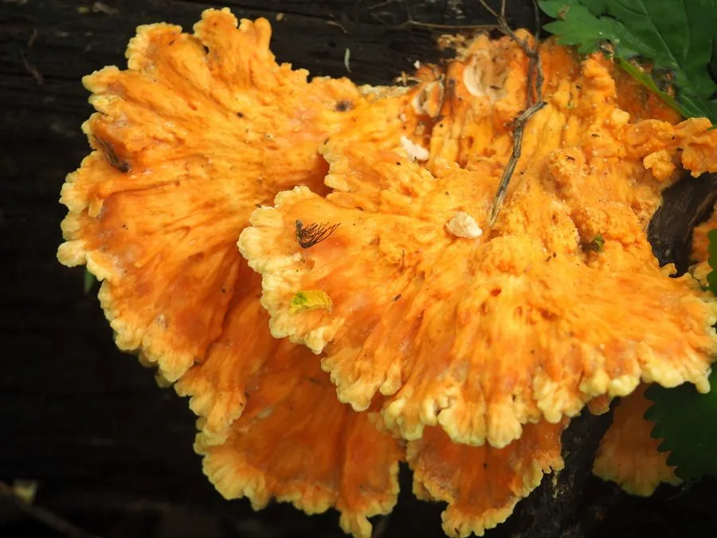

真菌 · 真菌界
硫磺菌 Laetiporus sulphureus

硫磺菌的菌盖呈硫黄色至橙色、层叠如瓦，生于栎树等阔叶树干上，幼嫩时可食，因味道像鸡肉而被称为“树鸡蘑”。
- 分类
- 门担子菌门纲伞菌纲目多孔菌目科拟层孔菌科属硫磺菌属
- 栖息环境
- 栎、栗、柳等阔叶树的活立木、枯立木与倒木，夏秋季出菇
- 地理分布
- 温带地区广泛分布，中国各地林区常见
- 保护级别
- 暂无评估（IUCN 未评估，中国未列入重点保护名录）
物种志
硫磺菌是担子菌门拟层孔菌科的大型木腐真菌，子实体无柄或短柄，由多个扇形至半圆形的菌盖覆瓦状层叠而成，单个菌盖宽 10–40 cm，厚 1–3 cm。菌盖表面橙黄色至硫黄色，老熟后褪为淡黄白色；边缘较薄、呈波浪状。菌盖腹面为细密的孔口，硫黄色，伤后颜色变深；菌肉浅黄色，幼时柔软多汁，老后变硬呈干酪状。孢子印白色。
硫磺菌生于栎、栗、柳等阔叶树的活立木、枯立木和倒木上，引起木材褐色腐朽，在温带地区广泛分布，中国各地林区常见，夏秋季出菇。幼嫩的子实体肉质柔软，有“鸡肉”般的口感，可切片炒食或做汤，但必须充分加热；老熟的个体质地木栓化，不能食用。部分人食用后会出现过敏反应，且长在针叶树特别是紫杉上的个体曾引起中毒，因此采食时务必确认寄主树种。
形态与习性
- 子实体多个菌盖覆瓦状层叠，宽 10–40 cm
- 颜色橙黄至硫黄色，老后褪为淡黄白
- 孔口细密，硫黄色，伤后变深
- 菌肉浅黄色，幼时柔软，老后木栓化
- 寄主栎、栗、柳等阔叶树
- 食用性幼嫩时可食，必须熟食，部分人过敏
- 腐朽类型引起木材褐色腐朽
趣味知识
- 硫磺菌通体橙黄，颜色像硫磺，名字由此而来。
- 幼嫩时肉质柔软，吃起来有鸡肉的口感，故称“树鸡蘑”。
- 它长在阔叶树干上，会引起木材褐色腐朽。
- 长在针叶树或紫杉上的硫磺菌曾引起中毒，采食要认准寄主。